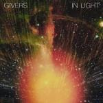
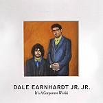

Music Reviews
-

Robert Pollard Lord of the Birdcage
One of the most significant American songwriters of the past 25 years, Robert Pollard has gained a reputation for his incomparable ability to release a suitcase of albums of remarkable consistency. This, his fourth project for 2011, is no exception.
Pierce Brown reviews... -

Givers In Light
Hailing from Lafayette, Louisiana, Givers come stressing a need for polyrhythmic indie pop, but will early comparisons to Dirty Projectors overshadow their debut?
David Hogg reviews... -
Blanck Mass Blanck Mass
The inevitable solo debut of Fuck Buttons' Benjamin John Power, can Blanck Mass do for Carl Sagan and suffocation what his other band did for Fisher Price and unnecessary swearing?
Mark Davison has a headache now... -
WU LYF Go Tell Fire To The Mountain
After months of hype, WU LYF finally self-release their debut record of emotional, organ-infused indie rock. Are they as unique as they lead us to believe
Stephen Wragg reviews... -

Dale Earnhardt Jr. Jr. It's A Corporate World
Dale Earnhardt Jr. Jr. make you feel light and fluffy in their corporate world. Be prepared to bounce and whistle to the infectious sounds on their debut LP, even if you don't want to.
Randi Dietiker reviews...
-

Iceage New Brigade
Salute the brigade leaders of the sound of young Denmark.
Juan Edgardo Rodríguez reviews... -
Bohren & der Club of Gore Beileid
Bohren & der Club of Gore hit all the right notes in this dark, ominous "doom jazz" record.
Matt Montgomery reviews... -

Eddie Vedder Ukulele Songs
Armed with just a ukulele, Eddie Vedder still remains as ponderous and reflective as ever. And he's probably still as miserable, which can only be a good thing.
Akhil Sood reviews... -
Liturgy Aesthethica
Liturgy’s Aesthethica signals black metal’s “cross”over and the subliminal message on the cover states as much.
Sean Caldwell reviews... -

Dengue Fever Cannibal Courtship
The L.A.-based purveyors of bilingual, Cambodian, psychedelic pop music return with their fourth and best album to date.
Sam Redlark caught dengue fever in Eritrea...